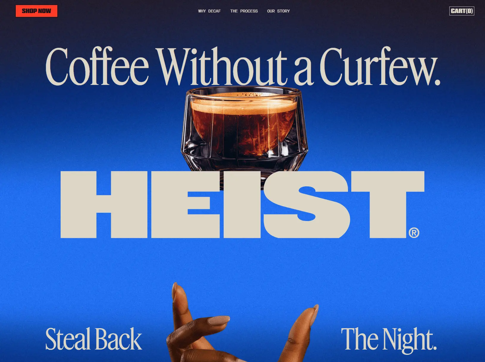

Heist
- Интернет-магазин
- Еда и HoReCa
- Кофейня
- Обычным пользователям
- Дизайнерам
- Маркетологам
- Редакционный
- Люкс
- Цветная тема
- Синий фон
- Скроллителлинг
- Видео-фон
- Бегущая строка
- Микроанимации
- Shopify
- Vite
- Swiper
- Adobe Fonts
- Google Analytics 4
- Meta Pixel
- Microsoft Clarity
- Klaviyo
- Okendo
- Gorgias
- Lightlabs
- Patrol
- Английский язык
- США
- Действующий сайт

Что это
Магазин американского бренда декафа Heist: кофе без кофеина и «1/4 каф» для второй половины дня. Тёмно-синий герой с гигантским логотипом и бокалом, который остаётся на месте при прокрутке, длинные манифесты о декафе и плёночное зерно на всём сайте. Зернистый претенциозный сайт бренда кофе без кофеина.
Что смотреть в первую очередь
Смотреть в первую очередь героя: закреплённый бокал, всплывающие руки и гигантский HEIST на синем градиенте. Затем — страницу «Why Decaf» с таблицами и длинным манифестом; зерно и красный подвал задают тон всему сайту.
Приёмы
- Скроллителлинг
- Видео-фон
- Бегущая строка
- Микроанимации
Интересные факты
- Первый экран — не видео и не библиотека анимации: собственный веб-компонент считает прогресс прокрутки, задаёт переменные стилей и держит бокал на месте, пока не отпустит его после заданного расстояния.
- Плёночное зерно первого экрана — не отдельный эффект: слой зерна в стилях отключён, зерно уже вписано в фоновую фотографию.
- Типографика на трёх шрифтах: узкий дисплейный для заголовков, узкий гротеск для интерфейса и моноширинный для цифр; гигантское HEIST — отдельный векторный логотип.
- Тема собрана через сборщик из собственных секций; библиотека плавной прокрутки в сборке есть, но на главной выключена, а карусели отвечает Swiper.
- Поисковая оптимизация неровная: у главной и статей уникальные заголовки и описания, а у карточки товара заголовок — просто «Heist» без описания.
- На главной четыре беззвучных зацикленных видео с ленивой загрузкой; в разметке есть и потоковый формат, и mp4.
- Контент — длинные манифесты с таблицами: сравнение способов декофеинизации, содержание кофеина, слепая оценка 78–86 баллов и 66 отзывов. robots.txt вдобавок ссылается на agents.md и эндпоинт для агентских покупок.
Паспорт
- Домен
- heist.co
- Тип сайта
- Интернет-магазин
- Категории
- Еда и HoReCa
- Подкатегории
- Кофейня
- Для кого
- Обычным пользователям, Дизайнерам, Маркетологам
- Стиль
- Редакционный, Люкс
- Язык
- Английский
- Страна
- США, Орландо
- Автор
- не указано
- Год
- 2026
- Добавлен в коллекцию
- 29.10.2026
Палитра
-
#216EEC— 32% кадра -
#1A2244— 21% кадра -
#124EB3— 14% кадра -
#DCD6C6— 14% кадра -
#0A3587— 10% кадра
- Режим
- Цветная
- Цвет фона
- Синий
Технологии
- Shopify
- Vite
- Swiper
- Adobe Fonts и свои гарнитуры
- Google Analytics 4
- Meta Pixel
- Microsoft Clarity
- Klaviyo
- Okendo
- Gorgias
- Lightlabs
- Patrol